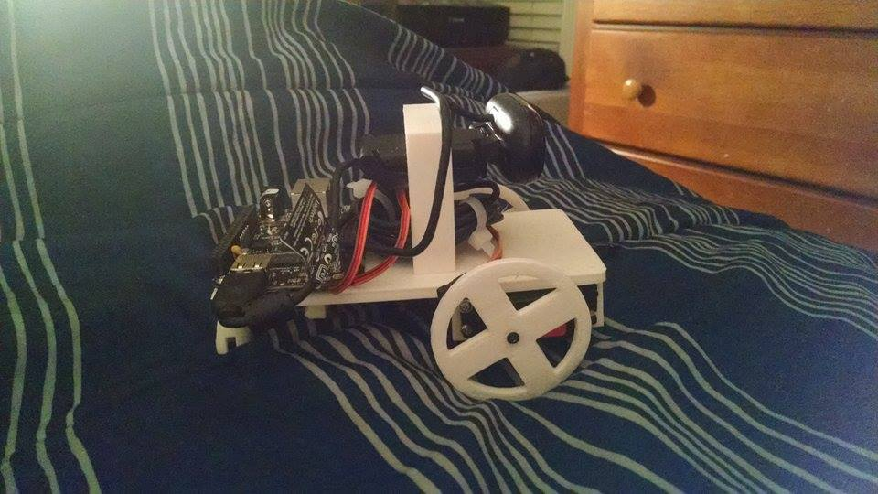

Robotics Projects
I have nearly completed my second large scale robotics project. The first project was done for Imagine RIT in the winter months of 2014. It was a small platform that could track people faces and follow them around using a meccanum wheel drive system. My second project is a robust ROS based robot that I will be able to use for possible higher level projects.
 For information about SortME, the small face tracking platform, please visit the project page: SortME
For information about SortME, the small face tracking platform, please visit the project page: SortME
 For information about RoveME, my large scale ROS robotics platform, please visit the project page: RoveME
For information about RoveME, my large scale ROS robotics platform, please visit the project page: RoveME
 To see more about my robot vision education platform, please visit CeeVee's page: CeeVee
 To see more about my tool identification project for the Computer Science House at RIT, please visit the project page: ToolID
To see more about my tool identification project for the Computer Science House at RIT, please visit the project page: ToolID